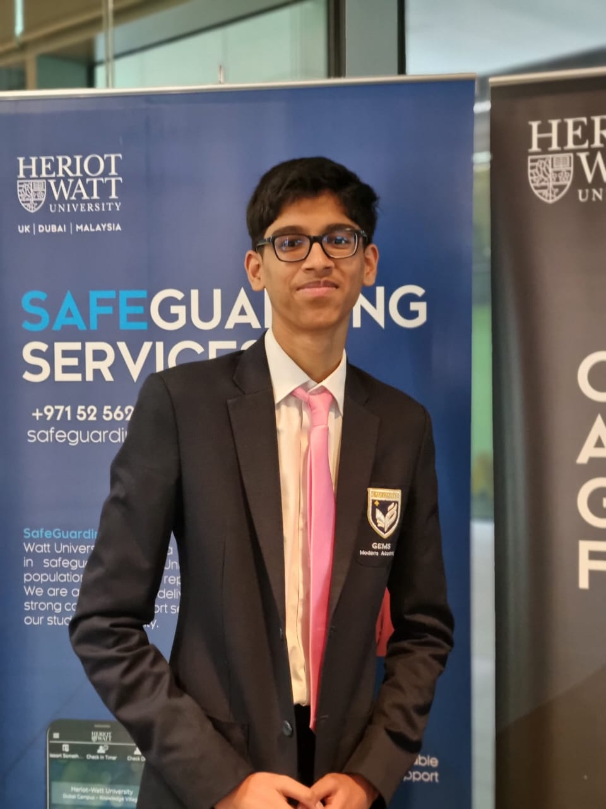

Hi, I'm Yudaant Gupta

I'm a first-year Mechanical Engineering student at TU Eindhoven with a strong, ongoing interest in computer science and software development. My curiosity started with cars — how their mechanical systems, electronics, and control software all have to work together — and that same interest in how complex systems fit together has pulled me toward programming and data-driven problem solving. I like working at the intersection of hardware and software: understanding a system mechanically, then building the tools and code that make it smarter or more efficient. I'm currently looking to combine my engineering coursework with hands-on software projects and internships.